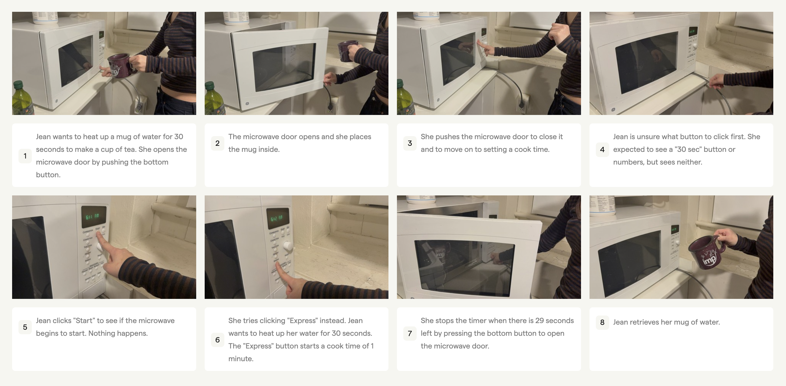

Introduction
In order to practice crafting personas and building storyboards, I investigated the usability of a microwave found in my dorm's communal kitchen. I observed three different users interacting with the microwave. I also interviewed the users to gain insight into their experiences. Ultimately, I aim to identify the challenges users face when using the microwave and visualize their expriences through personas and storyboards.
Observations
| Person 1 | Person 2 | Person 3 |
|---|---|---|
|
|
|
Interview Questions
After observing the behavior of the user, I then asked them a series of questions. The questions are listed below.
- Can you describe your experience using a microwave?
- How often do you use this microwave?
- What do you typically use it for?
- Are there any challenges?
- What is intuitive about the experience using this microwave?
- How do you resolve challenges when using a microwave?
- What components signify how to use a microwave?
- How user-friendly and effective is the microwave?
- What aspects of using a microwave are most frustrating or confusing for you?
- Have you ever faced technical difficulties while using the microwave? How did you handle them?
- Are there any features you wish the microwave had?
- What suggestions do you have for improving the experience of using the microwave overall?
In summary, the microwave is located in a public, communal kitchen in a dormitory. The users interviewed are all college students residing in the building. The users had mixed feelings about the microwave. One user expressed that the microwave’s interface did not feel intuitive as a first-time user, especially compared to previous microwaves they had used before. They had pressed “Start” and expected the microwave to start for at least a minute, but instead nothing happened. When asked about how they resolve challenges, they all responded that if one button did not perform the expected action, they would press another. One user stated that the opening and closing of the microwave was intuitive, but setting time and power was less so. There was no mention of looking up information online or in a manual, which emphasizes one user’s point that they wished everything they needed to know was listed on the microwave, instead of having to guess.
Personas
Persona 1: Jean is a busy college student who wants to quickly heat up goods. She does not know where to start when it comes to starting the microwave for 30 seconds. Jean represents users that are used to other interfaces.
| Thinks | Feels |
|---|---|
|
|
| Says | Does |
|
|
Persona 2: Helen is a college student who regularly uses the microwave to reheat leftovers or cook frozen meals. She sometimes gets confused when trying to set a specific power level. She represents users that are familiar with the microwave but struggle with specific details.
| Thinks | Feels |
|---|---|
|
|
| Says | Does |
|
|
Storyboard
The following storyboard chronicles the journey of Persona 1.
Conclusion
In conclusion, the microwave's interface is not intuitive for all users. The microwave has a number of different buttons and dials that can be confusing for first-time users. The lack of clear instructions on the microwave itself can lead to frustration and confusion. Additionally, there lacks an ordering to the different options, which can also be confusing to users. Users instead have to rely on trial and error to figure out how to use the microwave appropriately. Ultimately, this was a useful practice in building personas and storyboards to help visualize the challenges users face when using the microwave. These findings can be used to understand the needs and frustrations of users.